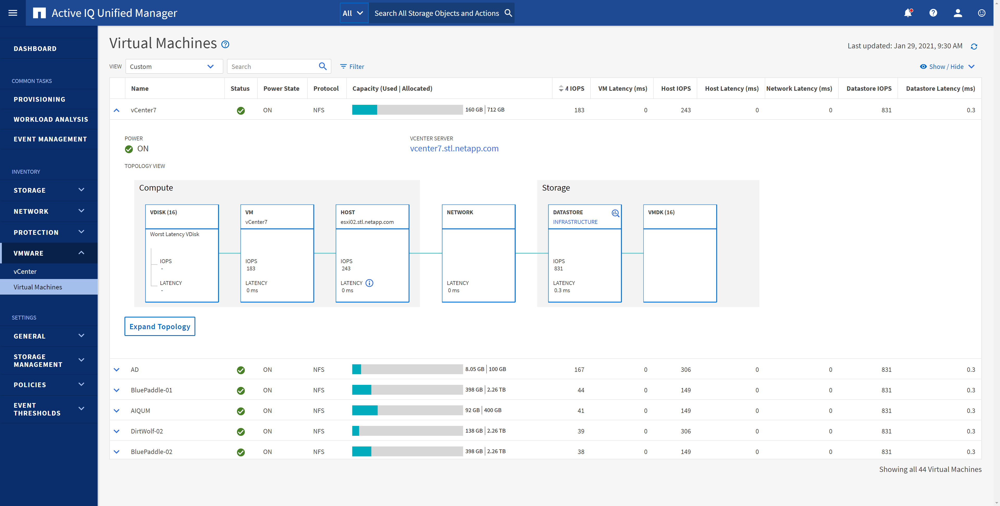

Solicitar cambios en el documento
Solicitar cambios en el documento Editar en GitHub
Editar en GitHub Guía del colaborador
Guía del colaboradorOtras funcionalidades para vSphere
Colaboradores
Protección de datos
Realizar backups de sus máquinas virtuales y recuperarlos rápidamente se encuentran entre los grandes puntos fuertes de ONTAP para vSphere, y es fácil gestionar esta capacidad dentro de vCenter con el plugin de SnapCenter para VMware vSphere. Utilice copias Snapshot para realizar copias rápidas de su máquina virtual o su almacén de datos sin que el rendimiento se vea afectado y, a continuación, envíelas a un sistema secundario mediante SnapMirror para obtener protección de datos fuera del sitio a largo plazo. Este método minimiza el espacio de almacenamiento y el ancho de banda de red porque solo almacena la información modificada.
SnapCenter permite crear políticas de backup que se pueden aplicar a varias tareas. Estas políticas pueden definir programaciones, retención, replicación y otras funcionalidades. Siguen permitiendo una selección opcional de instantáneas coherentes con la máquina virtual, que aprovecha la capacidad del hipervisor para desactivar la E/S antes de tomar una instantánea de VMware. Sin embargo, debido al efecto sobre el rendimiento de las snapshots de VMware, generalmente no se recomiendan a menos que necesite que el sistema de archivos invitados se coloque en modo inactivo. En su lugar, utilice copias Snapshot de ONTAP para protección general y use herramientas de aplicaciones como los complementos de SnapCenter para proteger datos transaccionales como SQL Server u Oracle. Estas copias Snapshot son distintas de las copias Snapshot de VMware (consistencia) y son adecuadas para la protección a largo plazo. Las copias Snapshot de VMware son solo "recomendado" para uso a corto plazo debido al rendimiento y otros efectos.
Estos complementos ofrecen funcionalidades ampliadas para proteger las bases de datos tanto en entornos físicos como virtuales. Con vSphere, puede usarlos para proteger bases de datos de SQL Server o Oracle donde los datos se almacenan en LUN de RDM, LUN iSCSI conectados directamente al sistema operativo invitado o archivos VMDK en almacenes de datos VMFS o NFS. Los plugins permiten especificar diferentes tipos de backups de bases de datos, admiten backup en línea o sin conexión y protegen los archivos de base de datos junto con los archivos de registros. Además del backup y recuperación, los plugins también admiten la clonado de bases de datos para fines de desarrollo o pruebas.
En la siguiente figura se muestra un ejemplo de la instalación de SnapCenter.

Para obtener mejores funcionalidades de recuperación ante desastres, considere el uso del SRA de NetApp para ONTAP con el administrador de recuperación del sitio de VMware. Además de admitir la replicación de almacenes de datos en un sitio de recuperación ante desastres, también permite realizar pruebas no disruptivas en el entorno de recuperación ante desastres mediante la clonación de los almacenes de datos replicados. La recuperación de un desastre y la reprotección de la producción después de resolver la interrupción del servicio también son fáciles mediante la automatización incorporada en el SRA.
Finalmente, para obtener el máximo nivel de protección de datos, considere una configuración de VMware vSphere Metro Storage Cluster (VMSC) con MetroCluster de NetApp. VMSC es una solución certificada por VMware que combina la replicación síncrona con la agrupación en clusters basada en arreglos, con los mismos beneficios de un cluster de alta disponibilidad que la distribución en sitios independientes para proteger contra los desastres del sitio. MetroCluster de NetApp ofrece configuraciones rentables para la replicación síncrona con recuperación transparente de fallos de cualquier componente de almacenamiento, así como recuperación con un único comando en caso de desastre en el sitio. El VMSC se describe con mayor detalle en la "TR-4128".
Recuperación de espacio
El espacio puede reclamarse para otros usos cuando las máquinas virtuales se eliminen de un almacén de datos. Al utilizar almacenes de datos NFS, el espacio se recupera inmediatamente cuando se elimina una máquina virtual (por supuesto, este método solo tiene sentido cuando el volumen se aprovisiona mediante thin provisioning; es decir, la garantía de volumen no se establece en ninguno). Sin embargo, si se eliminan archivos dentro del sistema operativo invitado de equipo virtual, el espacio no se reclama automáticamente con un almacén de datos NFS. Para almacenes de datos VMFS basados en LUN, ESXi y el sistema operativo invitado pueden emitir primitivos VAAI UNMAP en el almacenamiento (de nuevo, al utilizar thin provisioning) para reclamar espacio. Dependiendo de la versión, este soporte es manual o automático.
En vSphere 5.5 y versiones posteriores, el vmkfstools –y el comando se sustituye por el esxcli storage vmfs unmap Comando, que especifica la cantidad de bloques libres (consulte VMware KB "2057513" para más información). En vSphere 6.5 y versiones posteriores cuando se utiliza VMFS 6, el espacio se debería recuperar automáticamente de forma asíncrona (consulte "Recuperación del espacio de almacenamiento" En la documentación de vSphere), pero también se puede ejecutar manualmente si es necesario. ONTAP admite esta ASIGNACIÓN automática, mientras que las herramientas de ONTAP para VMware vSphere la establecen con baja prioridad. Tenga en cuenta que, al aprovisionar una LUN para su uso como almacén de datos VMFS, debe habilitar manualmente la opción de asignación de espacio en la LUN. Cuando se usan las herramientas de ONTAP para VMware vSphere, la LUN se configura automáticamente para admitir la reclamación de espacio y no se requieren otras acciones. Consulte "este" artículo de la base de conocimientos para obtener más información.
Clonado de máquinas virtuales y almacenes de datos
El clonado de un objeto de almacenamiento le permite crear rápidamente copias para un uso adicional, como el aprovisionamiento de equipos virtuales adicionales, operaciones de backup/recuperación de datos, etc. En vSphere, es posible clonar una máquina virtual, un disco virtual, VVol o un almacén de datos. Después de que se clona, el objeto se puede personalizar aún más, a menudo mediante un proceso automatizado. VSphere es compatible con ambos clones de copias completas, así como clones enlazados, donde sigue los cambios de forma independiente del objeto original.
Los clones enlazados son excelentes para ahorrar espacio, pero aumentan la cantidad de I/o que vSphere gestiona para el equipo virtual, lo que afecta al rendimiento de ese equipo virtual y, quizás, al host en general. Por este motivo, los clientes de NetApp suelen utilizar clones basados en sistemas de almacenamiento para obtener lo mejor de ambos mundos: Uso eficiente del almacenamiento y aumento del rendimiento.
La siguiente figura muestra la clonación de ONTAP.

Es posible descargar la clonado en sistemas que ejecutan software ONTAP mediante varios mecanismos, normalmente a nivel de máquina virtual, VVol o almacén de datos. Entre ellos se incluyen los siguientes:
-
VVols utiliza el proveedor de API de vSphere para el reconocimiento del almacenamiento (VASA) de NetApp. Los clones de ONTAP se utilizan para admitir copias Snapshot de VVol gestionadas por vCenter, que gestionan el espacio de manera eficiente con un efecto mínimo de I/o para crearlas y eliminarlas. Las máquinas virtuales también pueden clonarse mediante vCenter y también se descargan en ONTAP, ya sea en un único almacén de datos/volumen o entre almacenes de datos/volúmenes.
-
Clonado y migración de vSphere mediante API de vSphere: Integración de cabina (VAAI). Es posible descargar las operaciones de clonado de máquinas virtuales en ONTAP tanto en entornos SAN como NAS (NetApp suministra un complemento ESXi para habilitar VAAI para NFS). VSphere solo descarga las operaciones en máquinas virtuales frías (apagadas) en un almacén de datos NAS, mientras que las operaciones en máquinas virtuales activas (clonado y vMotion de almacenamiento) también se descargan para SAN. ONTAP usa el método más eficaz basado en el origen, el destino y las licencias de productos instaladas. Esta funcionalidad también la utiliza VMware Horizon View.
-
SRA (usado con VMware Site Recovery Manager). Aquí, se utilizan clones para probar la recuperación de la réplica de recuperación ante desastres de forma no disruptiva.
-
Backup y recuperación de datos con herramientas de NetApp como SnapCenter. Los clones de equipos virtuales se utilizan para verificar las operaciones de backup y montar un backup de equipo virtual para que se puedan copiar archivos individuales.
El clonado descargado de ONTAP puede invocarse con VMware, NetApp y herramientas de terceros. Los clones que se descargan en ONTAP tienen varias ventajas. Ofrecen una gestión eficiente del espacio en la mayoría de los casos, y necesitan almacenamiento solo para los cambios en el objeto; no hay ningún efecto adicional en el rendimiento para leerlos y escribirlos; en algunos casos, el rendimiento mejora si se comparten los bloques en las cachés de alta velocidad. También descargan los ciclos de CPU y las operaciones de I/o de red del servidor ESXi. La descarga de copias en un almacén de datos tradicional mediante un volumen FlexVol puede ser rápida y eficiente con la licencia de FlexClone, pero las copias entre volúmenes FlexVol pueden ser más lentas. Si mantiene las plantillas de equipos virtuales como origen de los clones, considere colocarlas en el volumen del almacén de datos (utilice carpetas o bibliotecas de contenido para organizarlas) para lograr clones rápidos con un uso eficiente del espacio.
También es posible clonar un volumen o LUN directamente en ONTAP para clonar un almacén de datos. Con almacenes de datos NFS, la tecnología FlexClone puede clonar un volumen completo, y el clon se puede exportar desde ONTAP y montar en ESXi como otro almacén de datos. En almacenes de datos VMFS, ONTAP puede clonar una LUN dentro de un volumen o un volumen entero, incluida una o varias LUN dentro de él. Una LUN que contiene un VMFS debe asignarse a un iGroup de ESXi y, a continuación, volver a firmar la bandeja de ESXi para que se monte y utilice como almacén de datos normal. Para algunos casos de uso temporales, se puede montar un VMFS clonado sin renuncias. Una vez que se ha clonado un almacén de datos, los equipos virtuales del interior se pueden registrar, volver a configurar y personalizar como si se clonaran individualmente.
En algunos casos, se pueden utilizar otras funciones con licencia para mejorar la clonación, como SnapRestore para backup o FlexClone. Estas licencias se incluyen a menudo en los paquetes de licencias sin coste adicional. Se requiere una licencia de FlexClone para las operaciones de clonado de VVol, así como para admitir copias snapshot gestionadas de un VVol (que se descargan del hipervisor en ONTAP). Una licencia de FlexClone también puede mejorar ciertos clones basados en VAAI cuando se usan en un almacén de datos/volumen (crea copias instantáneas con gestión eficiente del espacio en lugar de copias de bloques). El SRA también usa para probar la recuperación de una réplica de DR, y el SnapCenter para las operaciones de clonado y para buscar copias de backup para restaurar archivos individuales.
Eficiencia del almacenamiento y thin provisioning
NetApp ha sido el líder del sector con innovaciones de eficiencia del almacenamiento, como la primera deduplicación para cargas de trabajo principales, y la compactación de datos inline, que mejora la compresión y almacena archivos pequeños y I/o de forma eficiente. ONTAP admite deduplicación en línea y en segundo plano, así como compresión en línea y en segundo plano.
La siguiente figura muestra el efecto combinado de las funciones de eficiencia del almacenamiento de ONTAP.

Estas son algunas recomendaciones sobre el uso de la eficiencia del almacenamiento de ONTAP en un entorno vSphere:
-
La cantidad de ahorro obtenido con la deduplicación de datos se basa en la similitud de los datos. Con ONTAP 9.1 y versiones anteriores, la deduplicación de datos operaba a nivel de volumen, pero con la deduplicación de agregados en ONTAP 9.2 y versiones posteriores, los datos se deduplican en todos los volúmenes de un agregado en sistemas AFF. Ya no es necesario agrupar sistemas operativos y aplicaciones similares en un único almacén de datos para maximizar el ahorro.
-
Para aprovechar las ventajas de la deduplicación en un entorno de bloques, se deben aplicar thin provisioning a las LUN. A pesar de que el administrador de equipos virtuales todavía puede considerar la LUN como si se utilizara la capacidad aprovisionada, el ahorro de la deduplicación se devuelve al volumen para usarlo con otras necesidades. NetApp recomienda la puesta en marcha de estos LUN en volúmenes de FlexVol que también se aprovisionan mediante thin provisioning (las herramientas de ONTAP para VMware vSphere dimensionan el volumen aproximadamente un 5% mayor que la LUN).
-
También se recomienda thin provisioning (y es el valor predeterminado) para los volúmenes FlexVol NFS. En un entorno NFS, el ahorro de la deduplicación es visible inmediatamente para los administradores de almacenamiento y equipos virtuales con volúmenes con thin provisioning.
-
Thin provisioning se aplica también a las máquinas virtuales, donde NetApp recomienda normalmente VMDK con thin provisioning en lugar de gruesos. Cuando se utilice thin provisioning, asegúrese de supervisar el espacio disponible con las herramientas de ONTAP para VMware vSphere, ONTAP u otras herramientas disponibles para evitar problemas de falta de espacio.
-
Tenga en cuenta que al usar thin provisioning con sistemas ONTAP no se afecta al rendimiento; los datos se escriben en el espacio disponible para maximizar el rendimiento de escritura y lectura. A pesar de ello, algunos productos, como los clusters de recuperación tras fallos de Microsoft u otras aplicaciones de baja latencia, pueden requerir aprovisionamiento garantizado o fijo, y es sabio seguir estos requisitos para evitar problemas de soporte.
-
Para obtener el máximo ahorro de la deduplicación, considere la posibilidad de programar la deduplicación en segundo plano en sistemas basados en disco duro o la deduplicación en segundo plano automática en sistemas AFF. Sin embargo, los procesos programados utilizan recursos del sistema cuando se ejecutan. De esta forma, se podrían programar durante periodos menos activos (como fines de semana) o ejecutar con más frecuencia para reducir la cantidad de datos modificados que se van a procesar. La deduplicación automática en segundo plano en los sistemas AFF tiene mucho menos efecto en las actividades de primer plano. La compresión en segundo plano (para sistemas basados en disco duro) también consume recursos, por lo que solo se debe tener en cuenta para cargas de trabajo secundarias con requisitos de rendimiento limitados.
-
Los sistemas AFF de NetApp usan principalmente funcionalidades de eficiencia del almacenamiento inline. Cuando se trasladan datos a ellos mediante herramientas de NetApp que utilizan replicación de bloques, como la herramienta de transición de 7-Mode, SnapMirror o el movimiento de volúmenes, puede ser útil ejecutar escáneres de compresión y compactación para maximizar el ahorro en eficiencia. Revise este soporte de NetApp "Artículo de base de conocimientos" para obtener más detalles.
-
Las copias Snapshot pueden bloquear bloques que pueden reducirse mediante compresión o deduplicación. Cuando utilice eficiencia programada en segundo plano o escáneres de una sola vez, asegúrese de que funcionan y finalizan antes de realizar la siguiente copia Snapshot. Revise sus copias Snapshot y retención para asegurarse de que solo tenga las copias Snapshot que necesite, especialmente antes de ejecutar un trabajo de análisis o en segundo plano.
La tabla siguiente ofrece directrices de eficiencia del almacenamiento para cargas de trabajo virtualizadas en diferentes tipos de almacenamiento ONTAP:
| Carga de trabajo | Directrices de eficiencia del almacenamiento | ||
|---|---|---|---|
AFF |
Flash Pool |
Unidades de disco duro |
|
VDI y SVI |
Para las cargas de trabajo principales y secundarias, utilice:
|
Para las cargas de trabajo principales y secundarias, utilice:
|
Para las cargas de trabajo principales, utilice:
Para cargas de trabajo secundarias, utilice:
|
Calidad de servicio (QoS)
Los sistemas que ejecutan el software ONTAP pueden utilizar la función de calidad de servicio del almacenamiento ONTAP para limitar el rendimiento en Mbps y/o I/o por segundo (IOPS) de diferentes objetos de almacenamiento como archivos, LUN, volúmenes o SVM completas.
Los límites de rendimiento son útiles para controlar cargas de trabajo desconocidas o de prueba antes de la puesta en marcha a fin de asegurarse de que no afectan a otras cargas de trabajo. También se pueden utilizar para limitar una carga de trabajo abusivas una vez que se identifica. También admite niveles mínimos de servicio basados en IOPS para proporcionar un rendimiento constante para los objetos SAN en ONTAP 9.2 y para los objetos NAS en ONTAP 9.3.
Con un almacén de datos NFS, se puede aplicar una política de calidad de servicio a todo el volumen FlexVol o a archivos VMDK individuales en el mismo. Con almacenes de datos VMFS que utilizan LUN de ONTAP, las políticas de calidad de servicio se pueden aplicar al volumen de FlexVol que contiene los LUN o LUN individuales, pero no archivos VMDK individuales porque ONTAP no reconoce el sistema de archivos VMFS. Al utilizar vVols, se puede establecer una calidad de servicio mínima o máxima en equipos virtuales individuales usando el perfil de capacidad de almacenamiento y la política de almacenamiento de equipos virtuales.
El límite máximo de rendimiento de calidad de servicio en un objeto se puede establecer en Mbps o IOPS. Si se utilizan ambos, ONTAP aplica el primer límite alcanzado. Una carga de trabajo puede contener varios objetos y una política de calidad de servicio se puede aplicar a una o más cargas de trabajo. Cuando se aplica una política a varias cargas de trabajo, las cargas de trabajo comparten el límite total de la política. No se admiten los objetos anidados (por ejemplo, los archivos de un volumen no pueden tener cada uno su propia política). Los valores mínimos de calidad de servicio solo se pueden establecer en IOPS.
Las siguientes herramientas están disponibles en este momento para gestionar las políticas de calidad de servicio de ONTAP y aplicarlas a los objetos:
-
CLI de ONTAP
-
System Manager de ONTAP
-
OnCommand Workflow Automation
-
Active IQ Unified Manager
-
Kit de herramientas NetApp PowerShell para ONTAP
-
Herramientas de ONTAP para VASA Provider de VMware vSphere
Para asignar una política de calidad de servicio a un VMDK en NFS, tenga en cuenta las siguientes directrices:
-
La política debe aplicarse a la
vmname- flat.vmdkque contiene la imagen del disco virtual real, no lavmname.vmdk(archivo de descriptor de disco virtual) o.vmname.vmx(Archivo descriptor de máquina virtual). -
No aplique políticas a otros archivos del equipo virtual, como archivos de intercambio virtual (
vmname.vswp). -
Cuando utilice el cliente web de vSphere para buscar rutas de archivos (Datastore > Files), tenga en cuenta que combina la información del
- flat.vmdky... vmdky simplemente muestra un archivo con el nombre del. vmdkpero el tamaño del- flat.vmdk. Agregar-flaten el nombre del archivo para obtener la ruta correcta.
Para asignar una normativa de calidad de servicio a un LUN, incluidos VMFS y RDM, la SVM de ONTAP (mostrada como Vserver), la ruta de LUN y el número de serie pueden obtenerse en el menú sistemas de almacenamiento de la página de inicio de ONTAP Tools para VMware vSphere. Seleccione el sistema de almacenamiento (SVM) y, a continuación, Related Objects > SAN. Use este enfoque cuando especifique la calidad de servicio mediante una de las herramientas de ONTAP.
La calidad de servicio máxima y mínima se puede asignar fácilmente a una máquina virtual basada en VVol con las herramientas de ONTAP para VMware vSphere o Virtual Storage Console 7.1 y versiones posteriores. Cuando cree el perfil de capacidad de almacenamiento para el contenedor VVol, especifique un valor de IOPS máximo o mínimo con la funcionalidad de rendimiento y, a continuación, haga referencia a este SCP con la política de almacenamiento de la máquina virtual. Use esta política cuando cree la máquina virtual o aplique la política a una máquina virtual existente.
Los almacenes de datos de FlexGroup ofrecen funcionalidades de calidad de servicio mejoradas al usar las herramientas de ONTAP para VMware vSphere 9.8 y versiones posteriores. Puede establecer fácilmente la calidad de servicio en todas las máquinas virtuales de un almacén de datos o en máquinas virtuales específicas. Consulte la sección FlexGroup de este informe para obtener más información.
ONTAP QoS y VMware SIOC
QoS de ONTAP y VMware vSphere Storage I/o Control (SIOC) son tecnologías complementarias que los administradores de vSphere y almacenamiento pueden utilizar juntos para gestionar el rendimiento de máquinas virtuales vSphere alojadas en sistemas que ejecutan el software ONTAP. Cada herramienta tiene sus propias fuerzas, como se muestra en la siguiente tabla. Debido a los distintos ámbitos de VMware vCenter y ONTAP, algunos objetos pueden verse y gestionarse mediante un sistema, no el otro.
| Propiedad | Calidad de servicio de ONTAP | VMware SIOC |
|---|---|---|
Cuando está activo |
La directiva está siempre activa |
Activo cuando existe una contención (latencia por encima del umbral de los almacenes de datos) |
Tipo de unidades |
IOPS, Mbps |
IOPS, recursos compartidos |
Alcance de vCenter o aplicaciones |
Varios entornos de vCenter, otros hipervisores y aplicaciones |
Un único servidor vCenter |
¿Establecer QoS en la máquina virtual? |
VMDK solo en NFS |
VMDK en NFS o VMFS |
¿Establecer QoS en el LUN (RDM)? |
Sí |
No |
¿Configurar QoS en LUN (VMFS)? |
Sí |
No |
¿Configurar calidad de servicio en el volumen (almacén de datos NFS)? |
Sí |
No |
¿Configurar la calidad de servicio en SVM (inquilino)? |
Sí |
No |
¿Enfoque basado en políticas? |
Sí, pueden compartirse todas las cargas de trabajo de la política o aplicarse por completo a cada carga de trabajo de la política. |
Sí, con vSphere 6.5 y posterior. |
Se requiere licencia |
Incluido con ONTAP |
Enterprise Plus |
Planificador de recursos distribuidos de almacenamiento de VMware
El planificador de recursos distribuidos de almacenamiento (SDRS) de VMware es una función de vSphere que coloca los equipos virtuales en el almacenamiento en función de la latencia de I/o actual y el uso del espacio. A continuación, mueve la máquina virtual o los VMDK de forma no disruptiva entre los almacenes de datos de un clúster de almacenes de datos (también conocido como "pod"), seleccionando el mejor almacén de datos en el que colocar la máquina virtual o los VMDK en el clúster de almacenes de datos. Un clúster de almacenes de datos es una colección de almacenes de datos similares que se agregan a una sola unidad de consumo desde el punto de vista del administrador de vSphere.
Cuando se usan SDRS con las herramientas de ONTAP de NetApp para VMware vSphere, primero es necesario crear un almacén de datos con el plugin, utilizar vCenter para crear el clúster de almacenes de datos y, a continuación, añadir el almacén de datos. Una vez creado el clúster de almacenes de datos, es posible añadir almacenes de datos adicionales al clúster de almacenes de datos directamente desde el asistente de aprovisionamiento de la página Details.
Otras prácticas recomendadas de ONTAP para SDRS incluyen lo siguiente:
-
Todos los almacenes de datos del clúster deben usar el mismo tipo de almacenamiento (como SAS, SATA o SSD), ser todos los almacenes de datos VMFS o NFS y tener la misma configuración de replicación y protección.
-
Considere el uso de SDR en modo predeterminado (manual). Este enfoque permite revisar las recomendaciones y decidir si se aplican o no. Tenga en cuenta los siguientes efectos de las migraciones de VMDK:
-
Cuando SDRS mueve VMDK entre almacenes de datos, se pierde cualquier ahorro de espacio con la clonado o deduplicación de ONTAP. Puede volver a ejecutar la deduplicación para recuperar este ahorro.
-
Una vez que LOS SDR mueven VMDK, NetApp recomienda volver a crear las copias Snapshot en el almacén de datos de origen porque, de lo contrario, la máquina virtual que se bloquea el espacio.
-
Mover VMDK entre almacenes de datos en el mismo agregado tiene pocas ventajas y LOS SDRS no tienen visibilidad en otras cargas de trabajo que puedan compartir el agregado.
-
Gestión basada en normativas de almacenamiento y vVols
Las API de VMware vSphere para la conciencia de almacenamiento (VASA) facilitan que el administrador de almacenamiento pueda configurar almacenes de datos con funcionalidades bien definidas y permiten que el administrador de equipos virtuales las utilice siempre que lo necesite para aprovisionar equipos virtuales sin tener que interactuar entre sí. Vale la pena echar un vistazo a este enfoque para ver cómo puede simplificar sus operaciones de almacenamiento de virtualización y evitar una gran cantidad de tareas triviales.
Antes de VASA, los administradores de máquinas virtuales podían definir políticas de almacenamiento de máquinas virtuales, pero tenían que trabajar con el administrador de almacenamiento para identificar los almacenes de datos adecuados, a menudo utilizando documentación o convenciones de nomenclatura. Con VASA, el administrador de almacenamiento puede definir una serie de capacidades de almacenamiento, como el rendimiento, la clasificación por niveles, el cifrado y la replicación. Un conjunto de funcionalidades para un volumen o un conjunto de volúmenes se denomina perfil de capacidad de almacenamiento (SCP).
SCP soporta QoS mínima y/o máxima para los vVols de datos de una VM. La calidad de servicio mínima solo se admite en los sistemas AFF. Las herramientas de ONTAP para VMware vSphere incluyen una consola donde se muestra el rendimiento granular de máquinas virtuales y la capacidad lógica para vVols en sistemas ONTAP.
La siguiente figura muestra las herramientas de ONTAP para el panel de vVols de VMware vSphere 9.8.

Una vez definido el perfil de funcionalidad de almacenamiento, puede utilizarse para aprovisionar equipos virtuales mediante la normativa de almacenamiento que identifique sus requisitos. La asignación entre la política de almacenamiento de máquinas virtuales y el perfil de capacidad de almacenamiento de almacenes de datos permite que vCenter muestre una lista de almacenes de datos compatibles que podrá seleccionar. Este enfoque se conoce como gestión basada en políticas de almacenamiento.
VASA proporciona la tecnología para consultar el almacenamiento y devolver un conjunto de funcionalidades de almacenamiento a vCenter. Los proveedores de VASA proporcionan la traducción entre las API y construcciones del sistema de almacenamiento y las API de VMware que comprende vCenter. El proveedor VASA de NetApp para ONTAP se ofrece como parte de las herramientas de ONTAP para la máquina virtual del dispositivo VMware vSphere, y el complemento de vCenter proporciona la interfaz para aprovisionar y gestionar almacenes de datos VVol, así como la capacidad de definir perfiles de funcionalidad de almacenamiento (CDP).
ONTAP admite almacenes de datos de VVol tanto VMFS como NFS. El uso de vVols con almacenes DE datos SAN aporta algunas de las ventajas de NFS, como la granularidad a nivel de equipo virtual. Aquí encontrará algunas prácticas recomendadas para tener en cuenta y información adicional en "TR-4400":
-
Un almacén de datos de VVol puede consistir en varios volúmenes de FlexVol en varios nodos de clúster. El método más sencillo es un único almacén de datos, incluso cuando los volúmenes tienen diferentes funcionalidades. SPBM garantiza que se utiliza un volumen compatible para la máquina virtual. Sin embargo, todos los volúmenes deben formar parte de una única SVM de ONTAP y se debe acceder a ellos mediante un único protocolo. Un LIF por nodo para cada protocolo es suficiente. Evite el uso de varias versiones de ONTAP en un único almacén de datos de VVol, ya que las funcionalidades de almacenamiento pueden variar entre las versiones.
-
Utilice las herramientas de ONTAP para el plugin de VMware vSphere para crear y gestionar almacenes de datos de VVol. Además de gestionar el almacén de datos y su perfil, crea automáticamente un extremo de protocolo para acceder a vVols, si es necesario. Si se utilizan LUN, tenga en cuenta que los extremos de protocolo de LUN se asignan mediante los ID de LUN 300 y posteriores. Compruebe que la opción de configuración del sistema avanzado del host ESXi
Disk.MaxLUNPermite un número de ID de LUN que sea mayor que 300 (el valor predeterminado es 1,024). Para realizar este paso, seleccione el host ESXi en vCenter, después la pestaña Configure y busqueDisk.MaxLUNEn la lista Advanced System Settings. -
No instale ni migre VASA Provider, vCenter Server (basado en dispositivos o Windows) ni las herramientas de ONTAP para VMware vSphere en un almacén de datos vVols, ya que estos dependen mutuamente, lo cual limita la capacidad de gestionarlos en caso de una interrupción del suministro eléctrico u otra interrupción del centro de datos.
-
Realice un backup regular de la máquina virtual del proveedor de VASA. Como mínimo, cree copias Snapshot cada hora del almacén de datos tradicional que contiene VASA Provider. Para obtener más información sobre la protección y recuperación del proveedor de VASA, consulte este tema "Artículo de base de conocimientos".
La siguiente figura muestra los componentes de vVols.

Migración al cloud y backup
Otra ventaja de ONTAP es la amplia compatibilidad con el cloud híbrido, al fusionar sistemas en el cloud privado local con funcionalidades de cloud público. Estas son algunas de las soluciones cloud de NetApp que se pueden usar junto con vSphere:
-
* Cloud Volumes.* NetApp Cloud Volumes Service para AWS o GCP y Azure NetApp Files para ANF proporcionan servicios de almacenamiento gestionado multiprotocolo de alto rendimiento en los principales entornos de cloud público. Los pueden utilizar directamente los invitados de VMware Cloud VM.
-
Cloud Volumes ONTAP. el software para la gestión de datos Cloud Volumes ONTAP de NetApp proporciona control, protección, flexibilidad y eficiencia para sus datos en el cloud que elija. Cloud Volumes ONTAP es un software de gestión de datos nativo en el cloud e integrado en el software de almacenamiento ONTAP de NetApp. Utilícelo con Cloud Manager para poner en marcha y gestionar instancias de Cloud Volumes ONTAP junto con sus sistemas ONTAP locales. Saque partido de las funcionalidades avanzadas DE SAN iSCSI y NAS junto con la gestión de datos unificada, incluidas las copias de snapshots y la replicación de SnapMirror.
-
Servicios en la nube. Utilice Cloud Backup Service o SnapMirror Cloud para proteger los datos de sistemas en las instalaciones mediante almacenamiento en cloud público. Cloud Sync le ayuda a migrar y mantener sus datos sincronizados a través de NAS, almacenes de objetos y almacenamiento Cloud Volumes Service.
-
FabricPool. FabricPool ofrece una organización en niveles rápida y fácil para los datos de ONTAP. Los bloques fríos en las copias Snapshot se pueden migrar a un almacén de objetos en clouds públicos o un almacén de objetos privado de StorageGRID y se recuperan automáticamente cuando se vuelve a acceder a los datos de ONTAP. También puede usar el nivel de objeto como un tercer nivel de protección para los datos que ya está gestionado por SnapVault. Este enfoque le permite "Almacene más copias snapshot de sus equipos virtuales" En sistemas de almacenamiento ONTAP principales o secundarios
-
ONTAP Select. Utilice el almacenamiento definido por software de NetApp para ampliar su cloud privado a través de Internet a instalaciones y oficinas remotas, donde puede utilizar ONTAP Select para ofrecer compatibilidad con servicios de bloques y archivos, así como las mismas funcionalidades de gestión de datos vSphere que tiene en su centro de datos empresarial.
A la hora de diseñar sus aplicaciones basadas en máquinas virtuales, tenga en cuenta la movilidad del cloud futura. Por ejemplo, en lugar de colocar los archivos de datos y aplicaciones en conjunto, utilizan una exportación de NFS o LUN independiente para los datos. Esto permite migrar la máquina virtual y los datos por separado a los servicios de cloud.
Cifrado para datos de vSphere
Hoy en día, hay cada vez más demandas de protección de los datos en reposo mediante el cifrado. Aunque el foco inicial fue en la información financiera y sanitaria, existe un creciente interés en proteger toda la información, ya sea que esté almacenada en archivos, bases de datos u otros tipos de datos.
Los sistemas que ejecutan el software ONTAP facilitan la protección de cualquier dato con el cifrado en reposo. El cifrado de almacenamiento de NetApp (NSE) utiliza unidades de disco de cifrado automático con ONTAP para proteger datos SAN y NAS. NetApp también ofrece el cifrado de volúmenes de NetApp y el cifrado de agregados de NetApp como un método sencillo basado en software para cifrar volúmenes en cualquier unidad de disco. Este cifrado de software no requiere unidades de disco especiales ni gestores de claves externos y está disponible para los clientes de ONTAP sin coste adicional. Puede realizar una actualización y empezar a utilizarla sin interrupciones en los clientes o las aplicaciones, y ha sido validada según el estándar de nivel 1 de FIPS 140-2-2, incluido el gestor de claves incorporado.
Existen varios métodos para proteger los datos de las aplicaciones virtualizadas que se ejecutan en VMware vSphere. Uno de los métodos consiste en proteger los datos con software dentro de los equipos virtuales a nivel de SO «guest». Los hipervisores más recientes, como vSphere 6.5, ahora admiten el cifrado a nivel de equipo virtual como otra alternativa. Sin embargo, el cifrado del software de NetApp es simple y fácil y tiene estas ventajas:
-
Sin efecto sobre la CPU del servidor virtual. algunos entornos de servidor virtual necesitan todos los ciclos de CPU disponibles para sus aplicaciones, aunque las pruebas han demostrado que se necesitan hasta 5 veces los recursos de CPU con cifrado a nivel de hipervisor. Aunque el software de cifrado admita el conjunto de instrucciones AES-ni de Intel para descargar la carga de trabajo de cifrado (como lo hace el cifrado del software de NetApp), es posible que este método no sea factible debido al requisito de nuevas CPU que no sean compatibles con servidores antiguos.
-
Incluye el gestor de claves incorporado. el cifrado de software de NetApp incluye un gestor de claves incorporado sin coste adicional, lo que facilita su introducción sin servidores de gestión de claves de alta disponibilidad complejos de adquirir y usar.
-
No afecta a la eficiencia del almacenamiento. las técnicas de eficiencia del almacenamiento como la deduplicación y la compresión se utilizan ampliamente hoy en día y son clave para utilizar medios de disco flash de forma rentable. Sin embargo, por lo general, los datos cifrados no se pueden deduplicar o comprimir. El cifrado de almacenamiento y hardware de NetApp funciona a un nivel inferior y permite el uso completo de funciones de eficiencia del almacenamiento de NetApp, líderes del sector, a diferencia de otros métodos.
-
Cifrado granular sencillo del almacén de datos. con el cifrado de volúmenes de NetApp, cada volumen obtiene su propia clave AES de 256 bits. Si necesita cambiarlo, puede hacerlo con un solo comando. Este método es genial si tiene varios clientes o necesita probar el cifrado independiente para diferentes departamentos o aplicaciones. Este cifrado se gestiona a nivel de almacén de datos, lo cual es mucho más fácil que gestionar equipos virtuales individuales.
Es fácil empezar a usar el cifrado de software. Después de instalar la licencia, solo tiene que configurar el gestor de claves incorporado especificando una frase de acceso y luego crear un volumen nuevo o mover un volumen en el almacenamiento para habilitar el cifrado. NetApp está trabajando para añadir compatibilidad más integrada con funcionalidades de cifrado en futuros lanzamientos de sus herramientas de VMware.
Active IQ Unified Manager
Active IQ Unified Manager proporciona visibilidad de los VM en su infraestructura virtual y permite supervisar y solucionar los problemas de almacenamiento y rendimiento en su entorno virtual.
Una infraestructura virtual típica puesta en marcha en ONTAP tiene diversos componentes que se distribuyen en las capas informática, de red y de almacenamiento. Cualquier retraso en el rendimiento de una aplicación de equipo virtual puede producirse debido a una combinación de latencias que deben afrontar los distintos componentes de las capas respectivas.
La siguiente captura de pantalla muestra la vista Máquinas virtuales de Active IQ Unified Manager.

Unified Manager presenta el subsistema subyacente de un entorno virtual en una vista topológica para determinar si se ha producido un problema de latencia en el nodo de computación, la red o el almacenamiento. La vista también destaca el objeto específico que provoca el desfase en el rendimiento a la hora de dar pasos correctivas y solucionar el problema subyacente.
La siguiente captura de pantalla muestra la topología ampliada de AIUM.